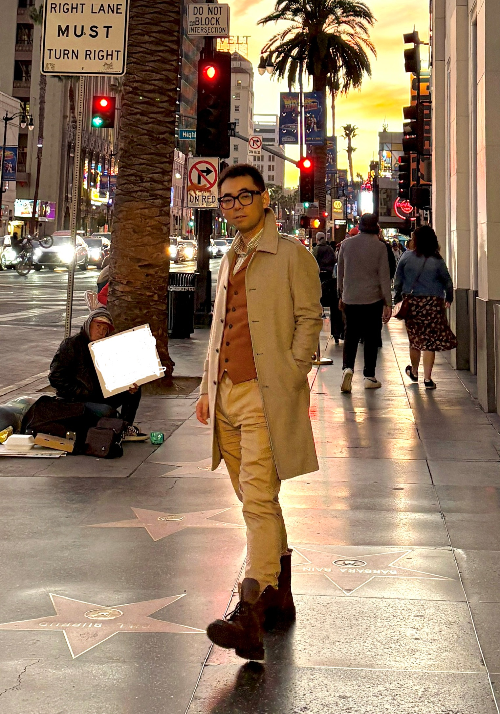

|
Ziyang GAO

Professeur à UCLA Courrier électronique : ziyang.gao AT math.ucla.edu, ziyang.gao AT protonmail.com Adresse postale : UCLA Department of Mathematics, 520 Portola Plaza, Box 951555, Los Angeles, CA 90095-1555, États-Unis. Bureau : MS 6925. |
 |
CV
Version longue. Version courte.Domaine de recherche
Mon domaine de recherche est la géométrie arithmétique. Je travaille surtout sur les variétés de Shimura (pures et mixtes), les variétés abéliennes, les cycles, la théorie de la hauteur (y compris la hauteur de Beilinson-Bloch), les fibrés adéliques, et la géométrie diophantienne.Les Évènements récents et à venir que je co-organise
Publications et Prépublications
Les fichiers ici peuvent être légèrement différents des versions publiées.- (avec Emmanuel Ullmo) Hodge cycles and quadratic relations between holomorphic periods on CM abelian varieties, Journal of the Institute Mathematics of Jussieu, en ligne en 2025, doi.org/10.1017/S1474748025101291.
- (avec Shouwu Zhang) Heights and periods of algebraic cycles in families, preprint 2024.
- Bigness of the tautological line bundle and degeneracy loci in families of abelian varieties, Proceedings of the ICBS 2024, volume 1, p. 103-118, International Press of Boston, 2025.
- (avec Emmanuel Ullmo et Andrei Yafaev) Bi-Q -structure on Hermitian symmetric spaces and quadratic relations between CM periods, preprint 2024, à paraître dans Documenta Mathematica.
- (avec Philipp Habegger) The Relative Manin-Mumford Conjecture, preprint 2023.
- (avec Philipp Habegger) Degeneracy loci in the universal family of abelian varieties, à paraître dans Journal of Number Theory (JNT Prime), vol. 270 (Proceedings of the Second JNT Biennial Conference 2022), p. 96-121, 2025 (en ligne en 2024), doi.org/10.1016/j.jnt.2024.05.015.
- (avec Tangli Ge et Lars Kühne) The Uniform Mordell-Lang Conjecture, preprint 2021.
- Survol : Recent developments of the Uniform Mordell-Lang Conjecture, preprint 2021.
- (avec Bruno Klingler) The Ax-Schanuel conjecture for variations of mixed Hodge structures, Math. Ann., vol. 388, p. 3847-3895, 2024 (en ligne en 2023), doi.org/10.1007/s00208-023-02614-w.
- (avec Vesselin Dimitrov et Philipp Habegger) A consequence of the relative Bogomolov conjecture, Journal of Number Theory (JNT Prime), vol. 230 (Proceedings of the First JNT Biennial Conference 2019), p. 146-160, 2022.
- (avec Vesselin Dimitrov et Philipp Habegger) Uniformity in Mordell-Lang for curves, Annals of Mathematics, vol. 194, p. 237-298, 2021.
- (avec Vesselin Dimitrov et Philipp Habegger) Uniform bound for the number of rational points on a pencil of curves, IMRN, vol. 2021, p. 1138-1159, 2021 (publié en ligne en décembre 2019), doi.org/10.1093/imrn/rnz248.
- Generic rank of Betti map and unlikely intersections, Compositio Mathematica, vol. 156, p. 2469-2509, 2020. Erratum
- (avec Serge Cantat, Philipp Habegger et Junyi Xie) The Geometric Bogomolov Conjecture, Duke Math. J., vol. 170, p. 247-277, 2021. doi:10.1215/00127094-2020-0044.
- Mixed Ax-Schanuel for the universal abelian varieties and some applications, Compositio Mathematica, vol. 156, p. 2263-2297, 2020.
- (avec Rafael von Känel et Lucia Mocz) Faltings Heights and L-functions, dans Arithmetic and Geometry: Ten Years in Alpbach edité par Gisbert Wüstholz and Clemens Fuchs, Annals of Mathematics Studies 202, Princeton U. Press.
- Appendice à The Betti map associated to a section of an abelian scheme (Yves André, Pietro Corvaja et Umberto Zannier), Inventiones mathematicae, vol. 222, pp. 161–202, 2020.
- (avec Philipp Habegger) Heights in families of abelian varieties and the Geometric Bogomolov Conjecture, Annals of Mathematics, vol. 189, p. 527-604, 2019.
- Panorama on Ax type transcendence results, Proceedings of the 7th International Congress of Chinese Mathematicians, vol. II, p. 33-52, International Press of Boston, 2019.
-
Enlarged mixed Shimura varieties, bi-algebraic system and some Ax type transcendental results, Forum of Mathematics, Sigma, vol. 7, 2019, e16,
doi.
- Bi-algebraic system on the universal vectorial extension Oberwolfach report No. 21, 2016. - About the mixed André-Oort conjecture: reduction to a lower bound for the pure case, Comptes rendus Mathématiques, vol. 354, p. 659-663, 2016.
- A special point problem of André-Pink-Zannier in the universal family of abelian varieties, Ann. Sc. Norm. Super. Pisa Cl. Sci., vol. XVII, p. 231-266, 2017.
- Towards the André-Oort conjecture for mixed Shimura varieties: the Ax-Lindemann theorem and lower bounds for Galois orbits of special points, Journal für die reine und angewandte Mathematik (Crelle), vol. 732, p. 85-146, 2017 (publié en ligne en mars 2015).
Diapositives
- Generic positivity of the Beilinson-Bloch height, version de SRI 2025 et CIRM 2025.
- Sparsity of rational points on curves, version de "The Mordell conjecture 100 years later (MIT, 2024)".
Notes
Ci-dessous les notes des cours de niveau M2 ou plus avancé que j'ai donné.- An Introduction to Shimura varieties and their compactifications
- An Introduction to Arakelov Geometry
- An Introduction to Diophantine Geometry
Miscellaneous
Dissertations
- HDR (Habilitation à diriger les recherches) Distribution of points on varieties: various aspects and interactions, soutenance le 28 juin 2021. Les diapositives.
- Thèse de doctorat Le théorème d'Ax-Lindemann mixte et ses applications à la conjecture de Zilber-Pink (diplôme en 2015) sous la direction d'Emmanuel Ullmo et Bas Edixhoven.
Enseignements
- 207A Fall 2025: An Introduction to Shimura varieties and their compactifications. Notes : Chapitre 1, Chapitre 2, Chapitre 3, Chapitre 4, Chapitre 5, Chapitre 6, Chapitre 7.
- Voici un lien aux sujets des enseignements que j'ai faits.